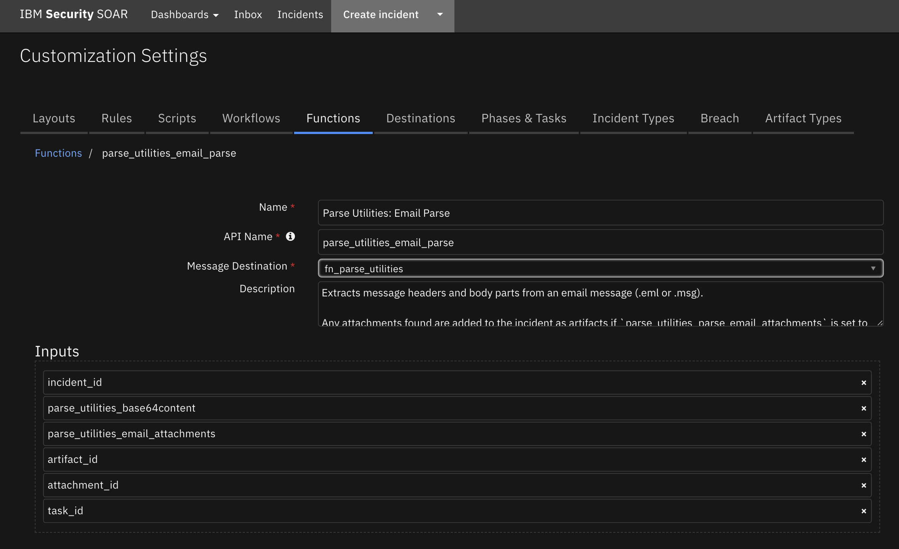
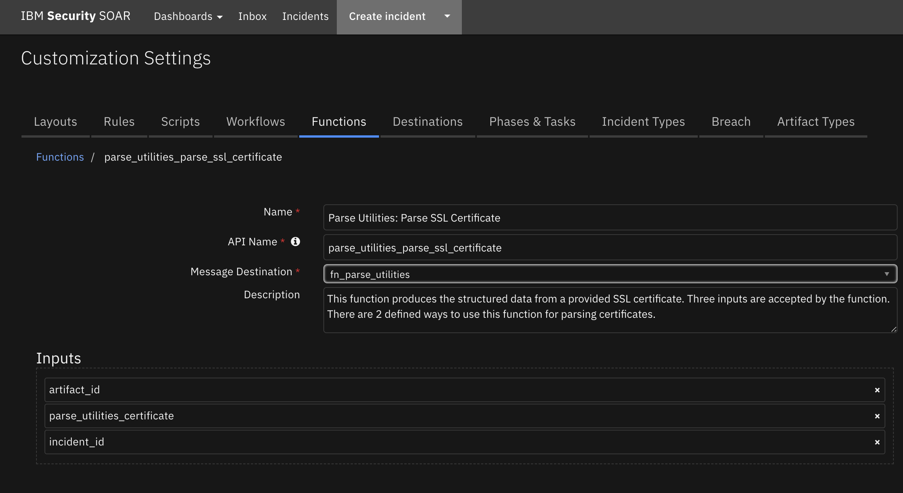
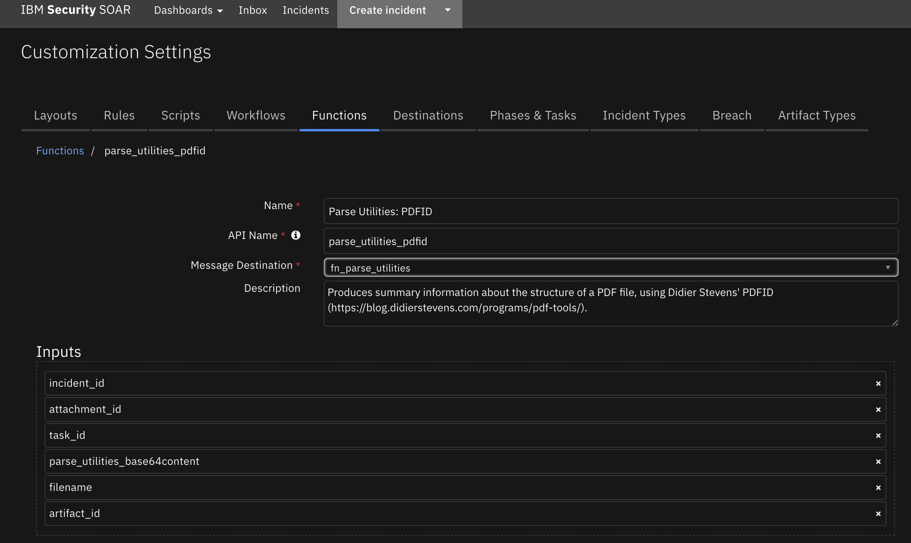
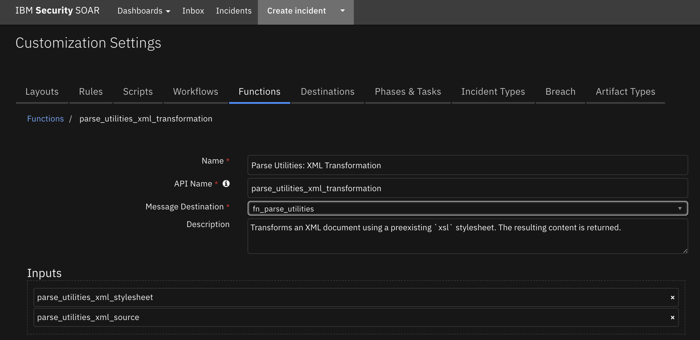
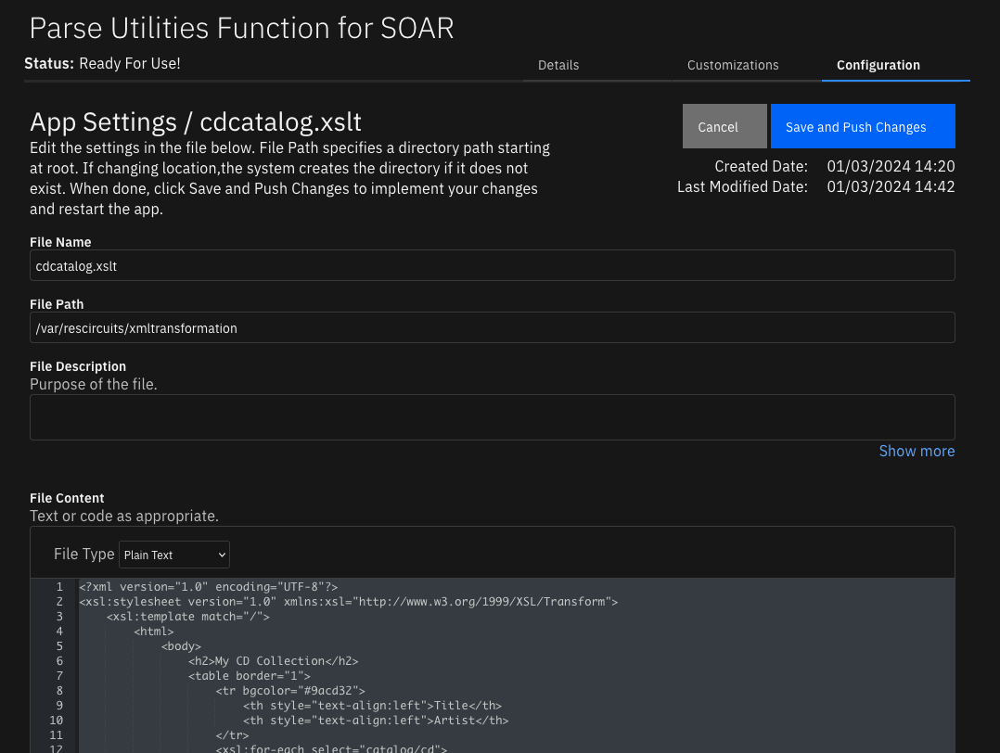

Parse Utilities#
Table of Contents#
Release Notes#
1.1.0 Changes#
In v1.1.0, the existing rules and workflows have been replaced with playbooks. This change is made to support the ongoing, newer capabilities of playbooks. Each playbook has the same functionality as the previous, corresponding rule/workflow.
If upgrading from a previous release, you’ll notice that the previous release’s rules/workflows remain in place. Both sets of rules and playbooks are active. For manual actions, playbooks have the same name as it’s corresponding rule, but with “(PB)” added at the end.
You can continue to use the rules/workflows. But migrating to playbooks provides greater functionality along with future app enhancements and bug fixes.
Version |
Date |
Notes |
|---|---|---|
1.1.0 |
1/2024 |
Add playbooks and remove workflows. |
1.0.2 |
2/2023 |
Update cryptography to version 39.0.1 and pyOpenSSL to version 23.0 |
1.0.1 |
1/2023 |
Bug Fix |
1.0.0 |
11/2022 |
Initial Release |
Overview#
Useful workflow/playbook functions to use for common parsing in the SOAR platform

This package contains functions to parse information from emails, ssl certificates, and PDFs as well as a function to transform an XML document using a preexisting xsl stylesheet.
Key Features#
Parse emails to extract message headers and body parts
Produces summary info about the structure of a PDF file
Parses SSL certificates
Transform an XML document using a preexisting xsl stylesheet
This app supports the IBM Security QRadar SOAR Platform and the IBM Security QRadar SOAR for IBM Cloud Pak for Security.
SOAR platform#
The SOAR platform supports two app deployment mechanisms, Edge Gateway (also known as App Host) and integration server.
If deploying to a SOAR platform with an App Host, the requirements are:
SOAR platform >=
48.2.16.The app is in a container-based format (available from the AppExchange as a
zipfile).
If deploying to a SOAR platform with an integration server, the requirements are:
SOAR platform >=
48.2.16.The app is in the older integration format (available from the AppExchange as a
zipfile which contains atar.gzfile).Integration server is running
resilient-circuits.If using an API key account, make sure the account provides the following minimum permissions:
Name
Permissions
Org Data
Read
Function
Read
All Incidents
Read
All Incident Notes
Edit
The following SOAR platform guides provide additional information:
Edge Gateway Deployment Guide or App Host Deployment Guide: provides installation, configuration, and troubleshooting information, including proxy server settings.
Integration Server Guide: provides installation, configuration, and troubleshooting information, including proxy server settings.
System Administrator Guide: provides the procedure to install, configure and deploy apps.
The above guides are available on the IBM Documentation website at ibm.biz/soar-docs. On this web page, select your SOAR platform version. On the follow-on page, you can find the Edge Gateway Deployment Guide, App Host Deployment Guide, or Integration Server Guide by expanding Apps in the Table of Contents pane. The System Administrator Guide is available by expanding System Administrator.
Cloud Pak for Security#
If you are deploying to IBM Cloud Pak for Security, the requirements are:
IBM Cloud Pak for Security >=
1.10.15.Cloud Pak is configured with an Edge Gateway.
The app is in a container-based format (available from the AppExchange as a
zipfile).
The following Cloud Pak guides provide additional information:
Edge Gateway Deployment Guide or App Host Deployment Guide: provides installation, configuration, and troubleshooting information, including proxy server settings. From the Table of Contents, select Case Management and Orchestration & Automation > Orchestration and Automation Apps.
System Administrator Guide: provides information to install, configure, and deploy apps. From the IBM Cloud Pak for Security IBM Documentation table of contents, select Case Management and Orchestration & Automation > System administrator.
These guides are available on the IBM Documentation website at ibm.biz/cp4s-docs. From this web page, select your IBM Cloud Pak for Security version. From the version-specific IBM Documentation page, select Case Management and Orchestration & Automation.
Proxy Server#
The app does support a proxy server.
Python Environment#
Python 3.6 and Python 3.9 are supported. Additional package dependencies may exist for each of these packages:
cryptography~=39.0.1
defusedxml~=0.7.1
lxml~=4.8
mail-parser~=3.15
pdfid~=1.1
pyOpenSSL~=23.0
resilient-circuits
Installation#
Install#
To install or uninstall an App or Integration on the SOAR platform, see the documentation at ibm.biz/soar-docs.
To install or uninstall an App on IBM Cloud Pak for Security, see the documentation at ibm.biz/cp4s-docs and follow the instructions above to navigate to Orchestration and Automation.
Supporting Outlook .msg files#
This function relies on
mail-parser>=3.15.
For Integrations Servers:#
To support parsing of Outlook email files (
.msg), you need to install themsgconverttool.msgconvertis a tool written in Perl and can be found inEmail::Outlook::Message(Centos/RHEL).See https://github.com/SpamScope/mail-parser for more information on the packaged used.
Install msgconvert on CentOS/RHEL based systems:#
$ sudo yum install cpan
$ sudo cpan -fTi install Email::Outlook::Message
For App Host Environments:#
The packages required to parse Outlook .msg files is built into the container.
App Configuration#
The following table provides the settings you need to configure the app. These settings are made in the app.config file. See the documentation discussed in the Requirements section for the procedure.
Config |
Required |
Example |
Description |
|---|---|---|---|
xml_stylesheet_dir |
Yes |
|
Path to the directory that the stylesheet is found (not the actual file) for transforming XML document |
Function - Parse Utilities: Email Parse#
Extracts message headers and body parts from an email message (.eml or .msg).
Any attachments found are added to the incident as artifacts if parse_utilities_parse_email_attachments is set to True.

Supporting Outlook .msg files#
This function relies on
mail-parser>=3.9.3.
For Integrations Servers:#
To support parsing of Outlook email files (
.msg), you need to install themsgconverttool.msgconvertis a tool written in Perl and can be found inEmail::Outlook::Message(Centos/RHEL).See https://github.com/SpamScope/mail-parser for more information on the packaged used.
Install msgconvert on CentOS/RHEL based systems:#
$ sudo yum install cpan
$ sudo cpan -fTi install Email::Outlook::Message
For App Host Environments:#
The packages required to parse Outlook .msg files is built into the container.
Inputs:
Name |
Type |
Required |
Example |
Tooltip |
|---|---|---|---|---|
|
|
No |
|
Only needed when collecting data from an file-base artifact |
|
|
No |
|
Only needed when collecting data from an file-base artifact |
|
|
No |
|
- |
|
|
No |
|
If set to True, attachments found in the email file will be attached as Artifacts |
|
|
Yes |
|
Only needed when collecting data from an file-base artifact |
|
|
No |
|
Only needed when collecting data from an file-base artifact |
Outputs:
NOTE: This example might be in JSON format, but
resultsis a Python Dictionary on the SOAR platform.
results = {
"content": {
"authentication-results": "spf=none (sender 00.00.0000.0000)\r\n smtp.mailfrom=example.ibm.com; dkim=none (message not signed)\r\n header.d=none;dmarc=fail action=none header.from=us.ibm.com;",
"body": "email body",
"content-type": "text/html; charset=\"UTF-8\"",
"date": "2022-10-10T19:54:18",
"from": [
[
"Example Admin",
"Example@us.ibm.com"
]
],
"has_defects": false,
"html_body": "[\"body\"]",
"message-id": "\u003c2022@example.ibm.com\u003e",
"mime-version": "1.0",
"plain_body": "",
"received": [
{
"by": "example.ibm.com 8.15.2/8.15.2/Submit",
"date": "Mon, 10 Oct 2022 12:54:18 -0700",
"date_utc": "2022-10-10T19:54:18",
"delay": 0,
"from": "www-data@localhost",
"hop": 1,
"id": "29AJsIaP1141965"
}
],
"received-spf": "None (protection.outlook.com: example.ibm.com does not\r\n designate permitted sender hosts)",
"return-path": "www-data@example.ibm.com",
"subject": "Ready",
"timezone": "-7.0",
"to": [
[
"",
"example@ibm.com"
]
],
"to_domains": [
"ibm.com"
],
"x-crosspremisesheadersfiltered": "outlook.com",
"x-crosspremisesheaderspromoted": "outlook.com",
"x-eopattributedmessage": "0",
"x-forefront-antispam-report": "CIP:169.55.84.251;CTRY:US;LANG:en;SCL:-1;SRV:;IPV:NLI;SFV:NSPM;H:gmx.mail.ibm.com;PTR:fb.54.37a9.ip4.static.sl-reverse.com;CAT:NONE;SFS:;DIR:INB;",
"x-microsoft-antispam": "BCL:0;",
"x-microsoft-antispam-mailbox-delivery": "ucf:0;jmr:0;auth:0;dest:I;ENG:(910001)(944506478)(944626604)(920097)(930097);",
"x-microsoft-antispam-message-info": "abcdefgh@@@@@@@",
"x-ms-exchange-crosstenant-authas": "Anonymous",
"x-ms-exchange-crosstenant-authsource": "ibm.com",
"x-ms-exchange-crosstenant-fromentityheader": "HybridOnPrem",
"x-ms-exchange-crosstenant-id": "dd9e9",
"x-ms-exchange-crosstenant-network-message-id": "some-id-1234567",
"x-ms-exchange-crosstenant-originalarrivaltime": "10 Oct 2022 19:54:24.1967\r\n (UTC)",
"x-ms-exchange-crosstenant-originalattributedtenantconnectingip": "TenantId=tenent-id-1234567;Ip=[000.00.00.000];Helo=[gmx.mail.com]",
"x-ms-exchange-organization-authas": "Anonymous",
"x-ms-exchange-organization-authsource": "ibm.com",
"x-ms-exchange-organization-expirationinterval": "1:00:00:00.0000000",
"x-ms-exchange-organization-expirationintervalreason": "OriginalSubmit",
"x-ms-exchange-organization-expirationstarttime": "10 Oct 2022 19:54:24.3217\r\n (UTC)",
"x-ms-exchange-organization-expirationstarttimereason": "OriginalSubmit",
"x-ms-exchange-organization-messagedirectionality": "Originating",
"x-ms-exchange-organization-network-message-id": "some-id-123456",
"x-ms-exchange-organization-scl": "-1",
"x-ms-exchange-processed-by-bccfoldering": "00.00.0000.0000",
"x-ms-exchange-transport-crosstenantheadersstamped": "MN2PR15MB2877",
"x-ms-exchange-transport-endtoendlatency": "00:00:14.1482542",
"x-ms-office365-filtering-correlation-id": "467954c2-54fc-491f-6f45-08daaaf93b34",
"x-ms-publictraffictype": "Email",
"x-ms-traffictypediagnostic": "ABCDEFGH",
"x-organizationheaderspreserved": "ibm.com",
"x-originatororg": "mail.ibm.com",
"x-tm-as-gconf": "00"
},
"inputs": {
"attachment_id": 88,
"incident_id": 2125,
"parse_utilities_email_attachments": true
},
"metrics": {
"execution_time_ms": 1347,
"host": "My Host",
"package": "fn-parse-utilities",
"package_version": "2.1.1",
"timestamp": "2022-10-13 15:50:56",
"version": "1.0"
},
"raw": "{\"received\": [{\"from\": \"www-data@localhost\", \"by\": \"example.ibm.com 8.15.2/8.15.2/Submit\", \"abcdefgh\", \"return-path\": \"www-data@example.ibm.com\"}",
"reason": null,
"success": true,
"version": "1.0"
}
Example Function Input Script:
# Define incident_id and artifact_id
inputs.parse_utilities_incident_id = incident.id
inputs.parse_utilities_artifact_id = artifact.id
# Setting this to True will add any found attachments as an Email Attachment Artifact
inputs.parse_utilities_email_attachments = True
Example Function Post Process Script:
import re
results = playbook.functions.results.email_parse
if not results.success:
note_text = u"""Playbook 'Parse Utilities: Email Parsing (Artifact) - Example (PB)' Failed<br>
<b>Reason:</b> {0}""".format(str(results.reason))
incident.addNote(helper.createRichText(note_text))
else:
email = results.content
# Get Email Subject
eml_subject = email.get("subject", "BLANK SUBJECT LINE")
#########################################
# Add Artifacts for Email Recipient: to #
#########################################
for eml_addr in email.get("to", []):
if len(eml_addr) >= 2:
incident.addArtifact("Email Recipient", eml_addr[1], eml_addr[0])
#########################################
# Add Artifacts for Email Recipient: cc #
#########################################
for eml_addr in email.get("cc", []):
if len(eml_addr) >= 2:
incident.addArtifact("Email Recipient", eml_addr[1], eml_addr[0])
########################################
# Add Artifacts for Email Sender: from #
########################################
for eml_addr in email.get("from", []):
if len(eml_addr) >= 2:
incident.addArtifact("Email Sender", eml_addr[1], eml_addr[0])
################################################
# Add Artifacts for IPs found in Email Headers #
################################################
for eml_header in email.get("received", []):
the_header = eml_header.get("from", None)
if the_header:
ips = re.findall('(?:(?:25[0-5]|2[0-4][0-9]|[01]?[0-9][0-9]?)\.){3}(?:25[0-5]|2[0-4][0-9]|[01]?[0-9][0-9]?)', the_header)
unique_ips = set(ips)
for an_ip in unique_ips:
if an_ip:
incident.addArtifact("IP Address", an_ip, u"Hop {0} at {1}\n\nHeader: {2}".format(eml_header.get("hop", ""), eml_header.get("date_utc", ""), the_header))
##############################################
# Add Artifacts for URLs found in Email Body #
##############################################
urls = []
for eml_body_content in [email.get("plain_body", ""), email.get("html_body", "")]:
urls.extend(re.findall('http[s]?://(?:[a-zA-Z]|[0-9]|[$-_@.&+]|[!*\(\),]|(?:%[0-9a-fA-F][0-9a-fA-F]))+', eml_body_content))
uniq_urls = set(urls)
for a_url in uniq_urls:
# Remove any backslash as regex can add
a_url = a_url.replace('\\',"")
if a_url:
incident.addArtifact("URL", a_url, "Found in parsed Email")
################################################
# Add the Email Body as a Note to the Incident #
################################################
if email.get("body"):
note_text = u"""<b>Parsed Email::</b><br>
<b>Subject:</b><br>{0}<br>
<b>From:</b><br>{1}<br>
<b>To:</b><br>{2}<br>
<b>Body:</b><br>{3}""".format(str(eml_subject),
str(email.get("from", "N/A")),
str(email.get("to", "N/A")),
str(email.get("body", "N/A")))
incident.addNote(helper.createRichText(note_text))
'''Uncomment this if you would like to add a (safer) plain_text only Note
if email.get("plain_body"):
note_text = u"""Parsed Email::\n\nSubject:\n{0}\n\nFrom:\n{1}\n\nTo:\n{2}\n\nBody:\n{3}""".format(str(eml_subject),
str(email.get("from", "N/A")), unicode(email.get("to", "N/A")), str(email.get("body", "N/A")))
incident.addNote(helper.createPlainText(note_text))
'''
Function - Parse Utilities: Parse SSL Certificate#
This function produces the structured data from a provided SSL certificate. Three inputs are accepted by the function. There are 2 defined ways to use this function for parsing certificates.

Inputs:
Name |
Type |
Required |
Example |
Tooltip |
|---|---|---|---|---|
|
|
No |
|
Only needed when collecting data from an file-base artifact |
|
|
No |
|
- |
|
|
Yes |
|
Only needed when collecting data from an file-base artifact |
Outputs:
NOTE: This example might be in JSON format, but
resultsis a Python Dictionary on the SOAR platform.
results = {
"expiration_status": "Valid",
"extensions": {
"basicConstraints": "false",
"issuerAltNames": "[]",
"subjectAltNames": "[\"sni.cloudflaressl.com\", \"*.adamtheautomator.com\", \"adamtheautomator.com\"]"
},
"issuer": "\"[(b\u0027C\u0027, b\u0027US\u0027), (b\u0027O\u0027, b\u0027Cloudflare, Inc.\u0027), (b\u0027CN\u0027, b\u0027Cloudflare Inc ECC CA-3\u0027)]\"",
"notAfter": "2023-03-29 23:59:59",
"notBefore": "2022-03-29 00:00:00",
"public_key": "b\u0027-----BEGIN PUBLIC KEY-----\\BgBGmQ==\\n-----END PUBLIC KEY-----\\n\u0027",
"signature_algorithm": "b\u0027ecdsa-with-SHA256\u0027",
"subject": "\"[(b\u0027C\u0027, b\u0027US\u0027), (b\u0027ST\u0027, b\u0027California\u0027), (b\u0027L\u0027, b\u0027San Francisco\u0027), (b\u0027O\u0027, b\u0027Cloudflare, Inc.\u0027), (b\u0027CN\u0027, b\u0027sni.cloudflaressl.com\u0027)]\"",
"version": 2
}
Example Function Input Script:
inputs.parse_utilities_certificate = artifact.value
inputs.parse_utilities_artifact_id = artifact.id
inputs.parse_utilities_incident_id = incident.id
Example Function Post Process Script:
color = "#45bc27"
results = playbook.functions.results.ssl_results
if (results.expiration_status != "Valid"):
color = "#ff402b"
noteText = """<br>Certificate Subject :<b>{0}</b>
<b>Certificate Expiry After :</b>{1}</a>
<b>Expiration Status:</b> <b style="color: {2}">{3}</b>
<br>Issuer Details :<b>{4}</b>""".format(results.subject, results.notAfter, color, results.expiration_status,results.issuer)
incident.addNote(helper.createRichText(noteText))
playbook.addProperty('convert_json_to_rich_text', {
"version": 1.0,
"header": None,
"padding": 10,
"separator": u"<br>",
"json": results,
"json_omit_list": [],
"incident_field": None
})
Function - Parse Utilities: PDFID#
Produces summary information about the structure of a PDF file, using Didier Stevens’ PDFID (https://blog.didierstevens.com/programs/pdf-tools/).
This function is useful in initial triage of suspicious email attachments and other files. It allows you to identify PDF documents that contain (for example) JavaScript or that execute an action when opened. PDFiD also handles name obfuscation. The combination of PDF automatic action and JavaScript makes a document very suspicious.

Inputs:
Name |
Type |
Required |
Example |
Tooltip |
|---|---|---|---|---|
|
|
No |
|
Only needed when collecting data from an file-base artifact |
|
|
No |
|
Only needed when collecting data from an file-base artifact |
|
|
No |
|
- |
|
|
No |
|
Only needed when base64content is given |
|
|
Yes |
|
Only needed when collecting data from an file-base artifact |
|
|
No |
|
Only needed when collecting data from an file-base artifact |
Outputs:
NOTE: This example might be in JSON format, but
resultsis a Python Dictionary on the SOAR platform.
results = {
"/AA": 0,
"/AcroForm": 0,
"/Colors \u003e 2^24": 0,
"/EmbeddedFile": 0,
"/Encrypt": 0,
"/JBIG2Decode": 0,
"/JS": 0,
"/JavaScript": 0,
"/Launch": 0,
"/ObjStm": 0,
"/OpenAction": 0,
"/Page": 85,
"/RichMedia": 0,
"/XFA": 0,
"endobj": 570,
"endstream": 398,
"filename": "README.pdf",
"header": "%PDF-1.4",
"isPdf": "True",
"obj": 570,
"startxref": 1,
"stream": 398,
"trailer": 1,
"xref": 1
}
Example Function Input Script:
# Required inputs are: incident_id artifact_id
inputs.parse_utilities_incident_id = incident.id
inputs.parse_utilities_artifact_id = artifact.id
Example Function Post Process Script:
# The output of PDFiD is a dictionary with the fundamental elements of the PDF file.
# These include,
# - "isPdf" (True or False)
# - "header" (the PDF version header)
# - "obj", "endobj" and so on: the count of each element.
# More documentation can be found at https://blog.didierstevens.com/programs/pdf-tools/
# Some sections of interest
interesting_sections = [
'obj', 'endobj', 'stream', 'endstream', 'startxref', 'xref', 'trailer',
'/AA', '/AcroForm', '/EmbeddedFile', '/Encrypt', '/JBIG2Decode', '/JS', '/JavaScript', '/Launch', '/ObjStm', '/OpenAction', '/Page', '/RichMedia', '/XFA'
]
results = playbook.functions.results.pdfid_results
if not results.isPdf:
incident.addNote(helper.createRichText(u"Not a PDF file: {}".format(results.get("filename"))))
else:
# In this example we just write them to a note in the incident
note_data = [u"PDFID report for {} ({}):".format(results.get("filename"), results.header)]
for section in interesting_sections:
value = results.get(section)
if value is not None:
note_data.append("{}: {}".format(section, value))
text = helper.createPlainText("\n".join(note_data))
incident.addNote(text)
# Maybe extend this to alert if (/JS or /JavaScript) and (/AA or /OpenAction)
Function - Parse Utilities: XML Transformation#
Transforms an XML document using a preexisting xsl stylesheet. The resulting content is returned. The XML document can be an artifact or attachment.

For App Host Environments:#
Set the app.config
xml_stylesheet_dirsetting as follows:xml_stylesheet_dir= /var/rescircuits/xmltransformation
Add your transformation file to the App Configuration tab to refer to the same directory as used in
xml_stylesheet_dir.

Inputs:
Name |
Type |
Required |
Example |
Tooltip |
|---|---|---|---|---|
|
|
No |
|
Only needed when collecting data from an file-base artifact |
|
|
No |
|
Only needed when collecting data from an file-base artifact |
|
|
Yes |
|
Only needed when collecting data from an file-base artifact |
|
|
No |
|
Only needed when collecting data from an file-base artifact |
|
|
No |
|
xml document to transform or empty when using attachments |
|
|
No |
|
name of stylesheet to use for the transformation |
Outputs:
NOTE: This example might be in JSON format, but
resultsis a Python Dictionary on the SOAR platform.
results = {
"content": "\u003chtml\u003e\u003cbody\u003e\u003ch2\u003eMy CD Collection\u003c/h2\u003e\u003ctable border=\"1\"\u003e\u003ctr bgcolor=\"#9acd32\"\u003e\u003cth style=\"text-align:left\"\u003eTitle\u003c/th\u003e\u003cth style=\"text-align:left\"\u003eArtist\u003c/th\u003e\u003c/tr\u003e\u003ctr\u003e\u003ctd\u003eEmpire Burlesque\u003c/td\u003e\u003ctd\u003eBob Dylan\u003c/td\u003e\u003c/tr\u003e\u003ctr\u003e\u003ctd\u003eHide your heart\u003c/td\u003e\u003ctd\u003eBonnie Tyler\u003c/td\u003e\u003c/tr\u003e\u003ctr\u003e\u003ctd\u003eGreatest Hits\u003c/td\u003e\u003ctd\u003eDolly Parton\u003c/td\u003e\u003c/tr\u003e\u003ctr\u003e\u003ctd\u003eStill got the blues\u003c/td\u003e\u003ctd\u003eGary Moore\u003c/td\u003e\u003c/tr\u003e\u003c/table\u003e\u003c/body\u003e\u003c/html\u003e"
}
Example Function Input Script:
inputs.parse_utilities_artifact_id = artifact.id
inputs.parse_utilities_incident_id = incident.id
inputs.parse_utilities_xml_stylesheet = "cdcatalog.xslt" # CHANGEME
Example Function Post Process Script:
results = playbook.functions.results.xml_transformation
# results.content is the string representation of the transformed xml document
content = helper.createPlainText(results.content)
incident.addNote(content)
Script - Convert JSON to rich text v1.3#
This script converts a json object into a hierarchical display of rich text and adds the rich text to an incident’s rich text (custom) field or an incident note. A workflow property is used to share the json to convert and identify parameters used on how to perform the conversion. Typically, a function will create workflow property and this script will run after that function to perform the conversion.
Features:
Display the hierarchical nature of json, presenting the json keys (sorted if specified) as bold labels
Provide links to found URLs
Create either an incident note or add results to an incident (custom) rich text field.
Object: incident
Script Text:
# (c) Copyright IBM Corp. 2010, 2023. All Rights Reserved.
VERSION = 1.3
"""
This script converts a json object into a hierarchical display of rich text and adds the rich text to an incident's rich text (custom) field or an incident note.
A workflow property is used to define the json to convert and identify parameters used on how to perform the conversion.
Typically, a function will create workflow property and this script will run after that function to perform the conversion.
Features:
* Display the hierarchical nature of json, presenting the json keys as bold labels
* Provide links to found URLs
* Create either an incident note or add results to an incident (custom) rich text field.
In order to use this script, define a workflow property called: convert_json_to_rich_text, to define the json and parameters to use for the conversion.
Workflow properties can be added using a command similar to this:
workflow.addProperty('convert_json_to_rich_text', {
"version": 1.3,
"header": "Artifact scan results for: {}".format(artifact.value),
"padding": 10,
"separator": u"<br />",
"sort": True,
"json": results.content,
"json_omit_list": ["omit"],
"incident_field": None
})
Format of workflow.property.convert_json_to_rich_text:
{
"version": 1.3, [this is for future compatibility]
"header": str, [header line to add to converted json produced or None. Ex: Results from scanning artifact: xxx. The header may contain rich text tags]
"padding": 10, [padding for nested json elements, or defaults to 10]
"separator": u"<br />"|list such as ['<span>','</span>'], [html separator between json keys and lists or defaults to html break: '<br />'.
If a list, then the data is brackets by the pair specified]
"sort": True|False, [sort the json keys at each level when displayed]
"json": json, [required json to convert]
"json_omit_list": [list of json keys to exclude or None]
"incident_field": "<incident_field>" [indicates a builtin rich text incident field, such as 'description'
or a custom rich text field in the format: 'properties.<field>'. default: create an incident note]
}
For playbooks, use playbook.addProperty() with the same format as workflow.addProperty()
Playbooks can also use playbook.functions.results.convert_json_to_rich_text using the standard function output which contains the 'content' json element.
When using playbook.functions.results.convert_json_to_rich_text with standard function results, all the defaults for padding, separator, etc. are used.
"""
import re
# needed for python 3
try:
unicode("abc") # fails in py3
py2 = True
except:
unicode = str
py2 = False
rc = re.compile(r'http[s]?://(?:[a-zA-Z]|[0-9]|[$-_@.&+#\?]|[!*\(\),]|(?:%[0-9a-fA-F][0-9a-fA-F]))+')
class ConvertJson:
"""Class to hold the conversion parameters and perform the conversion"""
def __init__(self, omit_keys=[], padding=10, separator=u"<br />", sort_keys=False):
self.omit_keys = omit_keys
self.padding = padding
self.separator = separator
self.sort_keys = sort_keys
def format_link(self, item):
"""[summary]
Find embedded urls (http(s)) and add html anchor tags to display as links
Args:
item ([string])
Returns:
[str]: None|original text if no links|text with html links
"""
formatted_item = item
if py2:
num_type = bool(item and isinstance(item, (int, long, bool, float)))
else:
num_type = bool(item and isinstance(item, (int, bool, float)))
if item and not num_type:
list = rc.findall(item)
if list:
for link in list:
formatted_item = formatted_item.replace(link, u"<a target='blank' href='{0}'>{0}</a>".format(link))
return formatted_item
def expand_list(self, list_value, is_list=False):
"""[summary]
convert items to html, adding indents to nested dictionaries.
Args:
list_value ([dict|list]): json element
Returns:
[str]: html converted code
"""
if not isinstance(list_value, list):
return self.format_link(list_value)
elif not list_value:
return u"None<br>"
try:
items_list = [] # this will ensure list starts on second line of key label
for item in list_value:
if isinstance(item, dict):
result = self.convert_json_to_rich_text(item)
if is_list:
items_list.append(u"<li>{}</li>".format(result))
else:
items_list.append(result)
elif isinstance(item, list):
items_list.append(self.expand_list(item, is_list=True))
elif is_list:
items_list.append(u"<li>{}</li>".format(self.format_link(unicode(item))))
else:
items_list.append(self.format_link(unicode(item)))
expand_list_result = self.add_separator(self.separator if not is_list else u"",
items_list,
is_list=is_list)
if is_list:
return u"<ul>{}</ul>".format(expand_list_result)
else:
return u"<div style='padding:5px'>{}</div>".format(expand_list_result)
except Exception as err:
return str(err)
def convert_json_to_rich_text(self, sub_dict):
"""[summary]
Walk dictionary tree and convert to html for better display
Args:
sub_dict ([type]): [description]
Returns:
[type]: [description]
"""
notes = []
if sub_dict and isinstance(sub_dict, (list, dict)):
if isinstance(sub_dict, list):
expanded_list = self.expand_list(sub_dict, is_list=True)
notes.append(self.add_separator(self.separator, expanded_list))
else:
keys = sorted (sub_dict.keys()) if self.sort_keys else sub_dict.keys()
for key in keys:
if key not in self.omit_keys:
value = sub_dict[key]
is_list = isinstance(value, list)
item_list = [u"<strong>{0}</strong>: ".format(key)]
if isinstance(value, dict):
convert_result = self.convert_json_to_rich_text(value)
if convert_result:
item_list.append(u"<div style='padding:{}px'>{}</div>".format(self.padding, convert_result))
else:
item_list.append(u"None<br>")
else:
item_list.append(self.expand_list(value, is_list=is_list))
notes.append(self.add_separator(self.separator, u"".join(make_unicode(v) for v in item_list), is_list=is_list))
result_notes = u"".join(notes)
if isinstance(self.separator, list):
return result_notes
else:
return result_notes.replace(
u"</div>{0}".format(self.separator), u"</div>").replace(
u"{0}</div>".format(self.separator), u"</div>"
) # tighten up result
def add_separator(self, separator, items, is_list=False):
"""
apply the separator to the data
:param separator: None, str or list such as ['<span>', '</span>']
:param items: str or list to add separator
:return: text with separator applied
"""
_items = items
if not _items:
return "<br>"
if not isinstance(_items, list):
_items = [_items]
if isinstance(separator, list):
return u"".join([u"{}{}{}".format(separator[0], item, separator[1]) for item in _items])
return u"{}{}".format(separator.join(_items), separator if not is_list else u"")
def make_unicode(value):
if value is None:
return 'None'
return unicode(value)
def get_results(property_name):
if playbook and playbook.functions.results[property_name] is not None:
return playbook.functions.results[property_name]
elif playbook and playbook.properties[property_name] is not None:
return playbook.properties[property_name]
elif workflow and workflow.properties[property_name] is not None:
return workflow.properties[property_name]
return None
def get_properties(property_name):
"""
Logic to collect the json and parameters from a workflow property.
Args:
property_name: workflow property to reference
Returns:
padding, separator, header, json_omit_list, incident_field, json, sort_keys
"""
result_properties = get_results(property_name)
if not result_properties:
helper.fail("Playbook/workflow property not found: {}".format(property_name))
padding = int(result_properties.get("padding", 10))
separator = result_properties.get("separator", u"<br />")
if isinstance(separator, list) and len(separator) != 2:
helper.fail("list of separators should be specified as a pair such as ['<div>', '</div>']: {}".format(separator))
header = result_properties.get("header")
sort_keys = bool(result_properties.get("sort", False))
json_omit_list = result_properties.get("json_omit_list")
if not json_omit_list:
json_omit_list = []
incident_field = result_properties.get("incident_field")
# workflow formatted content is 'json'. Standard functions is 'content'
json = result_properties.get("json") if result_properties.get("json") else result_properties.get("content")
json_err = None
# is there an issue we need handle now?
if not json and \
result_properties.get("success") == False and result_properties.get("reason"):
json_err = result_properties.get("reason")
return padding, separator, header, json_omit_list, incident_field, json, json_err, sort_keys
## S T A R T
padding, separator, header, json_omit_list, incident_field, json, json_err, sort_keys = get_properties('convert_json_to_rich_text')
if json_err:
result = "Result error: {}".format(json_err)
else:
if header:
if isinstance(separator, list):
hdr = u"{0}{1}{2}".format(separator[0], header, separator[1])
else:
hdr = u"{0}{1}".format(header, separator)
else:
hdr = u""
convert = ConvertJson(omit_keys=json_omit_list, padding=padding, separator=separator, sort_keys=sort_keys)
converted_json = convert.convert_json_to_rich_text(json)
result = u"{}{}".format(hdr, converted_json if converted_json else "\nNone")
rich_text_note = helper.createRichText(result)
if incident_field:
incident[incident_field] = rich_text_note
else:
incident.addNote(rich_text_note)
Playbooks#
Playbook Name |
Description |
Activation Type |
Object |
Status |
Condition |
|---|---|---|---|---|---|
Parse Utilities: Email Parsing (Artifact) - Example (PB) |
Example playbook showing how to parse an Email File (.eml or .msg) from an Artifact File. Sender and recipient email addresses are added as Artifacts. URLs and IPs found in the email headers or body are also added as Artifacts. The body of the email, as well as sender and recipient details are added in a Note to the Incident. If attachments are found in the parsed email message, they are added as Email Attachment Artifacts. |
Manual |
artifact |
|
|
Parse Utilities: Email Parsing (Attachment) - Example (PB) |
Example playbook showing how to parse an Email File (.eml or .msg) from Incident/Task Attachments. Sender and recipient email addresses are added as Artifacts. URLs and IPs found in the email headers or body are also added as Artifacts. The body of the email, as well as sender and recipient details are added in a Note to the Incident. If attachments are found in the parsed email message, they are added as Email Attachment Artifacts. |
Manual |
attachment |
|
|
Parse Utilities: Parse SSL Certificate - Example (PB) |
Example playbook that takes a PEM encoded SSL certificate as input and returns structured information about the certificate. |
Manual |
artifact |
|
|
Parse Utilities: PDFiD (Artifact) - Example (PB) |
Example playbook to show how to use the PDFiD function to get summary information about a PDF file artifact. |
Manual |
artifact |
|
|
Parse Utilities: PDFiD (Attachment) - Example (PB) |
Example playbook to show how to use the PDFiD function to get summary information about a PDF file artifact. |
Manual |
attachment |
|
|
Parse Utilities: XML Transformation (Artifact) - Example (PB) |
Example playbook to transform an XML document artifact using a defined xsl transform file. |
Manual |
artifact |
|
|
Parse Utilities: XML Transformation (Attachment) - Example (PB) |
Example playbook to transform an XML document attachment using a defined xsl transform file. |
Manual |
attachment |
|
|
Troubleshooting & Support#
Refer to the documentation listed in the Requirements section for troubleshooting information.
For Support#
This is an IBM supported app. Please search ibm.com/mysupport for assistance.